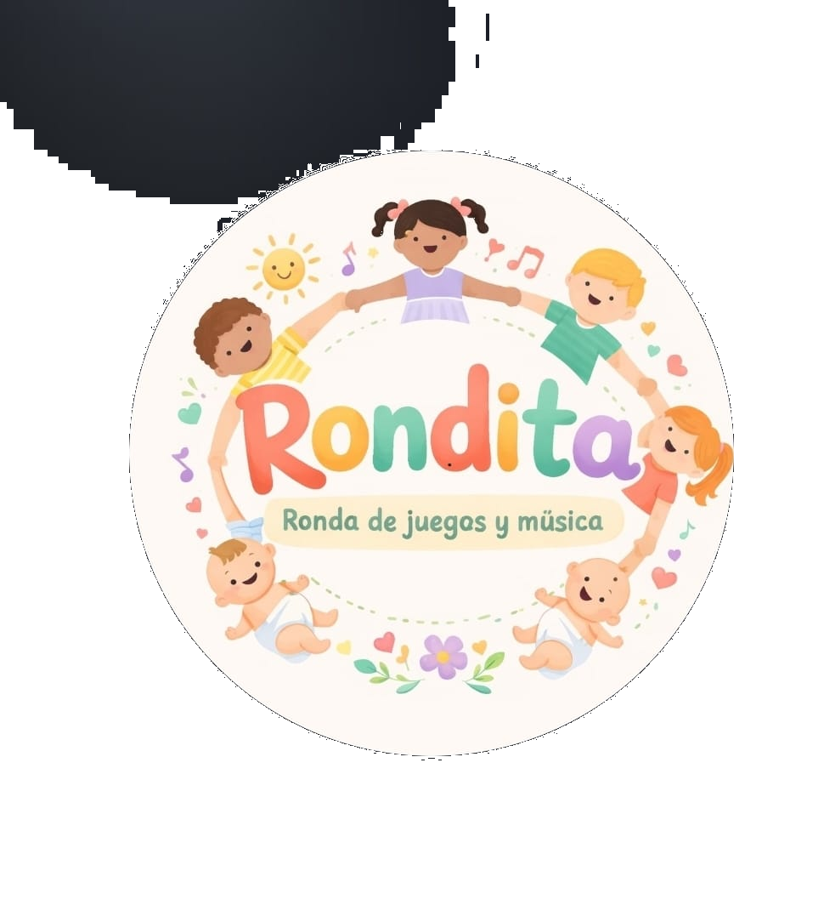
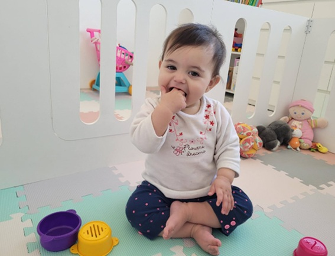
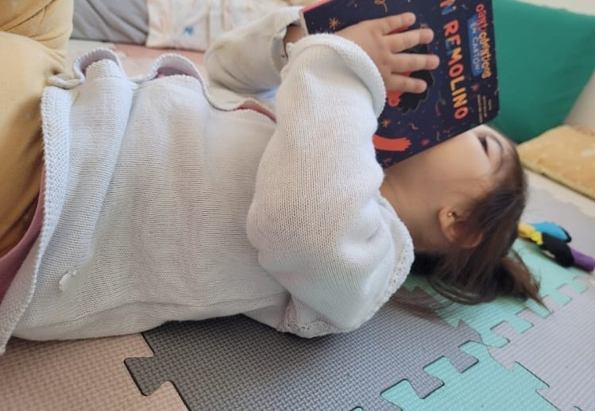
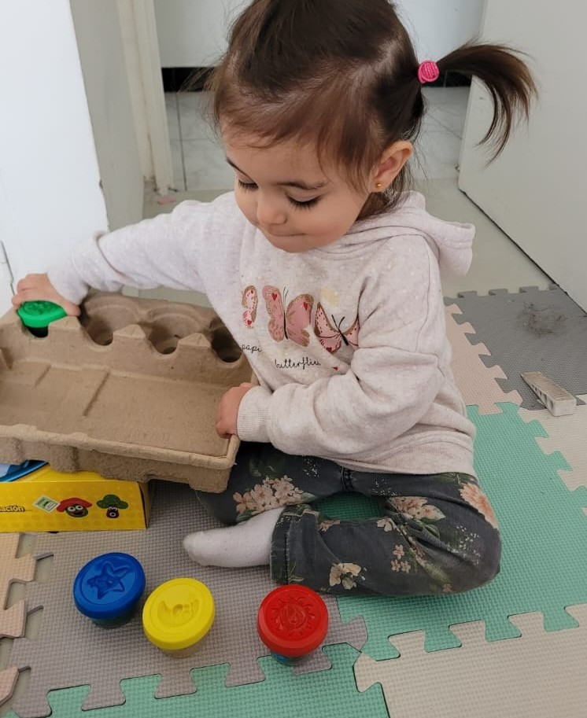
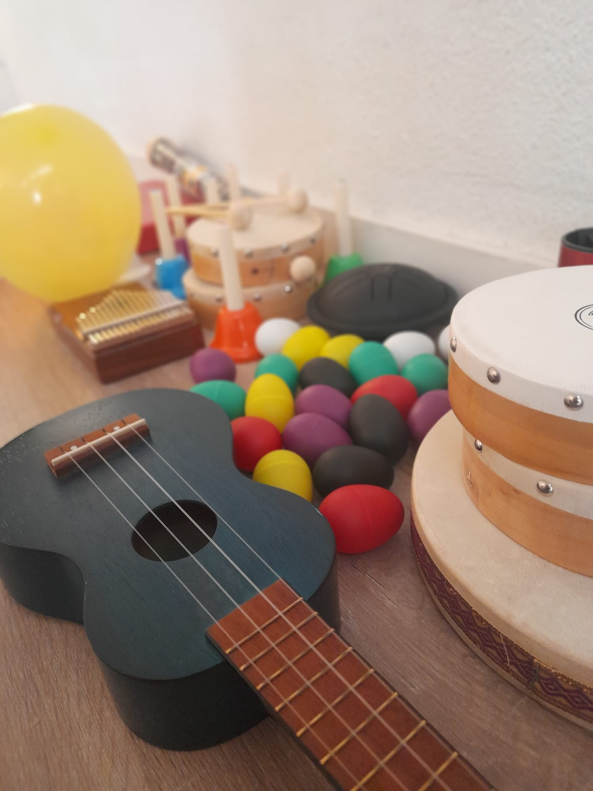
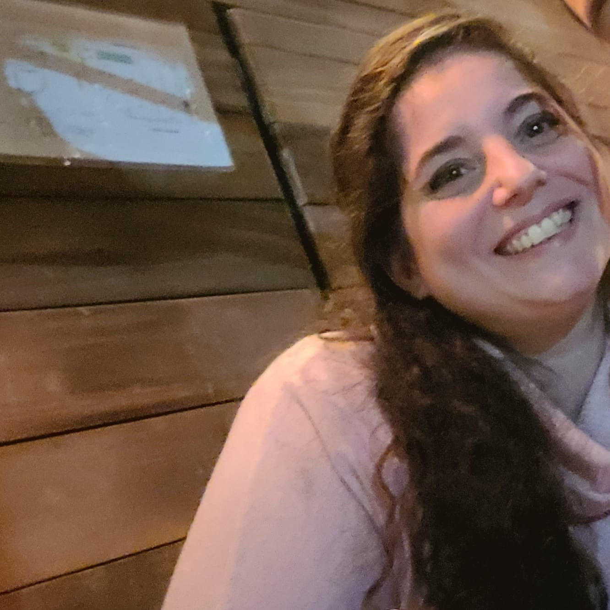
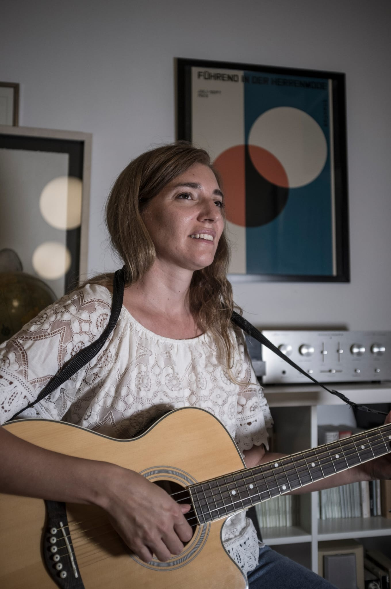

Taller de juego para bebés de 3 a 24 meses
Taller de estimulación musical para niños de 2 y 3 años
Un espacio para encontrarnos y regalarle al tiempo un momento distinto, donde la música, el movimiento y el juego se convierten en una forma de explorar el mundo juntos.
Cada encuentro está pensado como una experiencia sensible: para escuchar, tocar, mirar, moverse y sentir. Los bebés exploran a su propio ritmo, mientras los adultos acompañan, sostienen y también se dejan llevar por el juego.
Canciones que se cantan cerca, rimas que se dicen en brazos, instrumentos que suenan por primera vez, telas que se mueven, cuerpos que se balancean.
La música nos reúne y el juego abre caminos. Entre sonidos, miradas y risas, se van tejiendo pequeños momentos que fortalecen el vínculo y se transforman en recuerdos compartidos.
Rondita también es un espacio para encontrarse con otras familias que están transitando esta etapa tan intensa y hermosa de la crianza. Un momento para compartir, respirar y sentirse acompañados.
Creemos profundamente en respetar los tiempos de cada bebé, en observar, acompañar y orientar cuando es necesario. También en ofrecer un espacio donde las familias puedan hacer preguntas, compartir dudas y sentirse contenidas.




Este proyecto nace con la idea de ofrecer un momento de juego, exploración y vínculo, donde los bebés puedan desarrollarse a su propio ritmo y las familias se sientan acompañadas.
La propuesta busca que lo que sucede en los encuentros pueda llegar también a las casas: llevarse ideas, actividades simples y herramientas para seguir estimulando el lenguaje y el desarrollo en lo cotidiano.
Miércoles 10:15 – 11:00
Bebés de 3 a 12 meses
Miércoles 11:00 – 11:50
Bebés de 12 a 24 meses
La franja etaria corresponde a la edad del bebé al comenzar. Luego el grupo permanece junto y va creciendo con el paso de los meses.
De esta manera se genera un espacio de confianza donde las familias se conocen, comparten experiencias y construyen un pequeño camino en común.
Grupos de hasta 15 familias.
Inscribirme al taller de bebésUn espacio de juego musical pensado para niños pequeños donde se invita a explorar la música desde el movimiento, el ritmo y la imaginación.
A través de canciones, rondas, instrumentos y propuestas lúdicas, los niños experimentan con el sonido y el movimiento mientras desarrollan la escucha, la coordinación y la expresión corporal.
Los encuentros buscan estimular la curiosidad, el disfrute por la música y el encuentro con otros niños en un ambiente respetuoso y creativo.
Lunes 17:00 – 18:00
Niños de 2 a 3 años
Espacio Jaramillo
Jaramillo y Cramer
Zona Saavedra / Núñez
Ciudad de Buenos Aires

Soy Licenciada en Fonoaudiología con enfoque neurolingüístico y especializada en primera infancia. Desde hace más de 10 años acompaño a niños y sus familias en el desarrollo del lenguaje y la comunicación.
Convertirme en mamá transformó profundamente mi mirada y dio origen a Rondita: un espacio donde las familias puedan encontrarse, jugar y acompañar el crecimiento de sus bebés de una manera respetuosa y consciente.

Soy musicoterapeuta y psicopedagoga especializada en primera infancia. Acompaño a bebés y niños pequeños a través de la música y el juego.
Trabajo con propuestas de estimulación musical temprana inspiradas en la pedagogía musical de Edwin Gordon, generando experiencias que estimulan el desarrollo, el vínculo y la comunicación.
Si querés más información o reservar tu lugar podés escribirnos o completar el formulario.
WhatsApp: TU_NUMERO
Instagram: @ronditataller